Home / Past papers / MLP End Term / this paper
IIT M FOUNDATION DIPLOMA ENDTERM QPB1 07 Aug 2022 IBA NS - 07 Aug 2022
Elapsed 00:00
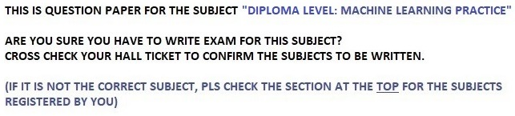
- Yes
- No
The similarity between loaders and fetchers of sklearn is -
- Both loaders and fetchers generate controlled synthetic datasets
- Both loaders and fetchers return a Bunch object, which is a dictionary with twokeys
- Both techniques load small standard datasets
- None of these options are correct
Which of the following options represent the main purpose of using the FeatureUnion?
- Enables different transformations on various columns of data based on theirtypes
- Combines output from several transformer objects by creating a newtransformer from them
- To chain multiple estimators to execute a fixed sequence of steps in datapreprocessing and modeling
- None of these
What will be the output of the following block of code?
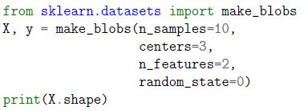
What will be the output of the following block of code?- (10, 2)
- (2, 10)
- (10, 3)
- (3, 10)
Which of the following options is the correct method to load the wine dataset and print its shape?
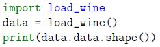
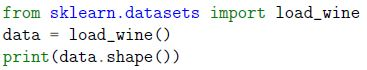
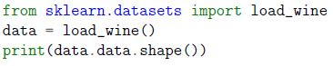
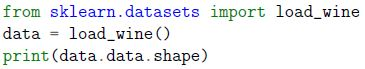
What is the output of the following block of code?
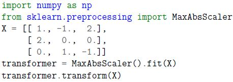
What is the output of the following block of code?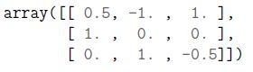
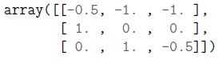
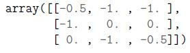
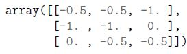
What is the output of the following code snippet?
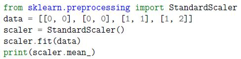
What is the output of the following code snippet?- [0.75 0.5]
- [0.25 0.5]
- [0.5 0.75]
- [0.5 0.5]
Which of the options will be the correct output for the following code snippet?
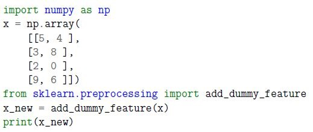
Which of the options will be the correct output for the following code snippet?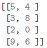
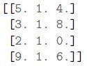
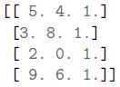
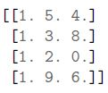
Which of the options will be the correct output for the following code snippet?
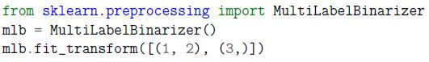
Which of the options will be the correct output for the following code snippet?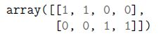
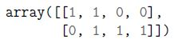
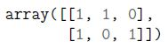
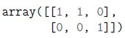
Which of the following options is correct explained variance score for the following code snippet applying PCA technique.
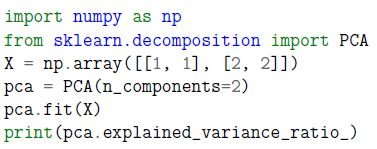
Which of the following options is correct explained variance score for the following code snippet applying PCA technique.- [1. 1.]
- [1. 0.]
- [0. 1.]
- [0. 0.]
Which of the following options is the correct output of the following block of code?
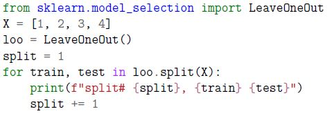
Which of the following options is the correct output of the following block of code?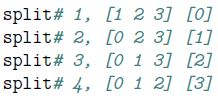
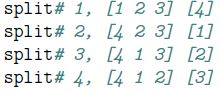
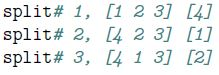
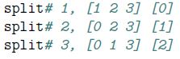
Which of the following options is the correct method to shuffle training data after each epoch in SGDRegressor?
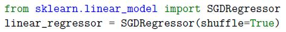
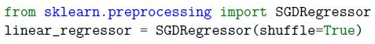
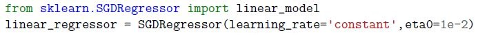
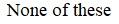
Which of the following options represent the correct output of the following block of code?
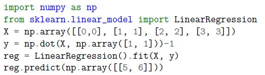
Which of the following options represent the correct output of the following block of code?- array([9.])
- array([10.])
- array([11.])
- SyntaxError: unexpected EOF while parsing
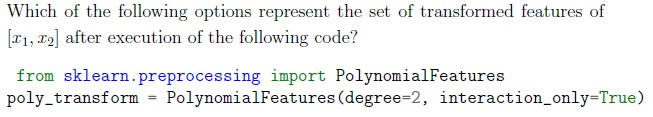
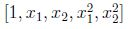
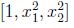
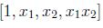
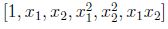
Which of the following options is the possible output for the following block of code?
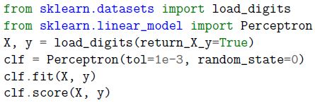
Which of the following options is the possible output for the following block of code?- 0.94
- 1.25
- 1.94
- -2.64
What operation does the following code implement?
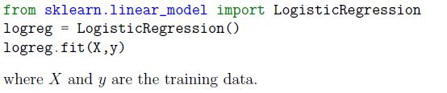
What operation does the following code implement?- It will perform linear regression on the given data.
- It will generate synthetic regression data.
- It will generate synthetic classification data.
- It will perform classification on the given data.
Which of the following options represent the recall value for the class 2 in the confusion matrix shown in Figure 1 if y_true = [0, 1, 2, 2, 2], y_pred = [0, 0, 2, 2, 1] ?
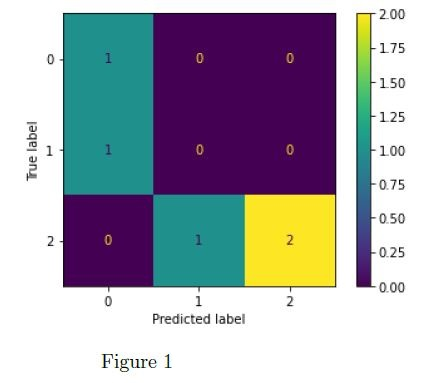
Which of the following options represent the recall value for the class 2 in the confusion matrix shown in Figure 1 if y_true = [0, 1, 2, 2, 2], y_pred = [0, 0, 2, 2, 1] ?- 0.67
- 1.00
- 0.50
- 0.25
Consider the following code block and mark the correct output.
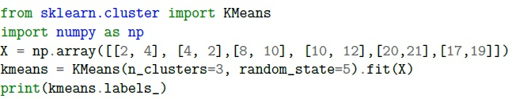
Consider the following code block and mark the correct output.- [0 0 0 1 1 1]
- [2 2 0 0 1 1]
- [0 1 2 0 1 2]
- [0 1 0 1 0 1]
Consider X and y as the training dataset. What will be the output of the following code?
 Consider X and y as the training dataset. What will be the output of the following code?
Consider X and y as the training dataset. What will be the output of the following code?
Consider X and y as the training dataset. What will be the output of the following code? - logistic
- relu
- identity
- softmax
Which of the following options represent the design philosophy of the sklearn API?
- Nonproliferation of classes
- Execution of all codes within 99.9 ms.
- Sensible defaults
- Direct accessibility of hyperparameters of all estimators
Which of the following options represent(s) the correct method(s) to search for the best regularization parameter for ridge regression?
- Search for the best regularization rate with built-in cross validation in RidgeCVestimator
- Step 1: Instantiate object of Ridge estimator.Step 2: Set parameter alpha to the maximum regularization rate.
- Use cross validation with Ridge to search for best regularization.
- Apply cross validation with SGDRegressor for searching the best regularizationparameter.
Consider the following block of code and mark all possible correct options.
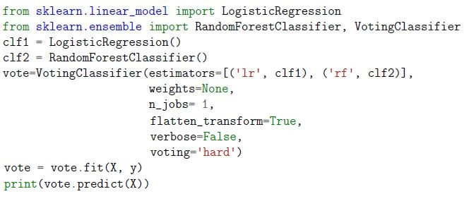
Consider the following block of code and mark all possible correct options.- Given model uses majority voting rule to predict class labels.
- Given model predicts the class labels based on the argmax of the sums of thepredicted probabilities.
- Setting flatten_transform =True with voting=’soft’ will flatten the output shapeof transform.
- None of these are correct
What will be the output of the following code block:
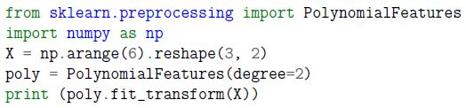
What will be the output of the following code block: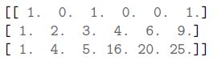
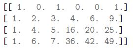
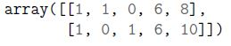
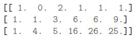
Which of the following options represent the output of the following block of code?
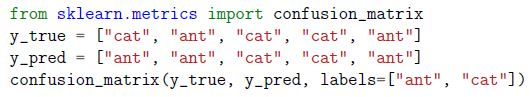
Which of the following options represent the output of the following block of code?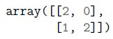
Which of the following statements will be true based on the following diagram?
Which of the following statements will be true based on the following diagram?
- The classifier will predict all positive classes as negatives and all negativeclasses as positives.
- The classifier will perfectly distinguish between the positive and negativeclasses.
- There is a good probability that the classifier can properly identify the classes.
- We can not comment on the classifier performance based on the given figure
Which of the following options is the correct output of the following block of code?
Which of the following options is the correct output of the following block of code?
- array([2.25, 2.25, 2.25])
- array([1., 1., 1.])
- array([2., 2., 2.])
- DummyRegressor()
Which of the following is likely to be the correct output of the code given below?
Which of the following is likely to be the correct output of the code given below?
- array([[1., 1., 1., 0.], [1., 1., 1., 0.], [0., 1., 0., 1.], [0., 1., 1., 1.]])
- array([[1., 1., 1., 0.], [1., 1., 1., 0.], [0., 1., 0., 1.], [0., 1., 0., 1.]])
- array([[1., 1., 0., 1.], [0., 1., 1., 0.], [0., 1., 1., 0.], [1., 0., 1., 1.]])
- array([[1., 1., 1., 0.], [1., 1., 1., 0.], [0., 1., 1., 1.], [0., 1., 1., 1.]])
For the following block of code, we get the output as 0.9875. How would the output change if we decrease max depth value ?:
For the following block of code, we get the output as 0.9875. How would the output change if we decrease max depth value ?:
- Output score will definitely increase.
- Output score will definitely decrease.
- Output score may decrease or remain the same.
- Code will throw an error because max_depth can’t be less than 6.
Consider the following block of code and mark the correct option.
Consider the following block of code and mark the correct option.
- The minimum number of samples required to split a leaf node is 5.
- The minimum number of samples required to split an internal node is 6.
- The minimum number of samples required to be at a leaf node is 4.
- The minimum number of samples required to split an internal node is 5.
Consider the following code snippet. What value should we fill at the blank place, so that given code block creates graph as shown below:
Consider the following code snippet. What value should we fill at the blank place, so that given code block creates graph as shown below:
- 2
- 4
- 5
- 6
- 10
Calculate the coefficient of determination (R2) [up to 1 decimal point] based on the following block of code.
Calculate the coefficient of determination (R2) [up to 1 decimal point] based on the following block of code.
In the given block of code, the Iris dataset having shape (150,4) has been loaded for model training. What do you think will be the output of the code given below?
In the given block of code, the Iris dataset having shape (150,4) has been loaded for model training. What do you think will be the output of the code given below?
Code snippet written below plots a graph for some dataset X as shown below.
Code snippet written below plots a graph for some dataset X as shown below. In the given dendrogram which sample is most similar to the sample having label as 1 ?
Comprehension passage - the questions below it refer to this
Which of the following is likely to be the correct output of the given code ?
- [2]
- [0]
- [1]
- [3]
Which of the following distance metrics is used in the given code.
- Euclidean_distance
- Manhattan_distance
- Hamming Distance
- None of these
Comprehension passage - the questions below it refer to this
Based on the above data, answer the given subquestions.
What will be the output of the following code?
What will be the output of the following code?
What will be the output of the following code?
What will be the output of the following code?
- (5, 12)
- (6, 11)
- (8, 15)
- (12, 8)
Comprehension passage - the questions below it refer to this
Which of the following is likely to be the correct output of the given code ?
- [3]
- [-1]
- [1]
- [-3]
Which of the following is likely to be the correct output:
Which of the following is likely to be the correct output:
- array([[-8., -3.], [ 3., 3.]])
- array([[-4., -3.], [ 3., 3.]])
- array([[-4., -3.], [ 5., 3.]])
- array([[-8., -3.], [ 5., 3.]])
Which of the following is/are true about the following block of the code?
 Which of the following is/are true about the following block of the code?
Which of the following is/are true about the following block of the code?
Which of the following is/are true about the following block of the code? - Given dataset belongs to binary classification.
- Number of neurons in the 1st hidden layer is 8.
- Strength of the L1 regularization term is 0.0001
- The activation function for the output layer in the given code is the ′logistic′function.
Which of the following code blocks will throw an error ?
Answer key
- Q1 (MCQ, 0 marks): A
- Q2 (MCQ, 2 marks): B
- Q3 (MCQ, 2 marks): B
- Q4 (MCQ, 2 marks): A
- Q5 (MCQ, 2 marks): D
- Q6 (MCQ, 2 marks): A
- Q7 (MCQ, 2 marks): C
- Q8 (MCQ, 2 marks): D
- Q9 (MCQ, 2 marks): D
- Q10 (MCQ, 2 marks): B
- Q11 (MCQ, 2 marks): A
- Q12 (MCQ, 2 marks): A
- Q13 (MCQ, 2 marks): B
- Q14 (MCQ, 2 marks): C
- Q15 (MCQ, 2 marks): A
- Q16 (MCQ, 2 marks): D
- Q17 (MCQ, 2 marks): A
- Q18 (MCQ, 2 marks): B
- Q19 (MCQ, 2 marks): D
- Q20 (MSQ, 2 marks): A, C, D
- Q21 (MSQ, 2 marks): A, C, D
- Q22 (MSQ, 2 marks): A, C
- Q23 (MCQ, 3 marks): A
- Q24 (MCQ, 3 marks): A
- Q25 (MCQ, 3 marks): B
- Q26 (MCQ, 3 marks): C
- Q27 (MCQ, 3 marks): D
- Q28 (MCQ, 3 marks): C
- Q29 (MCQ, 3 marks): D
- Q30 (MCQ, 3 marks): C
- Q31 (SA, 3 marks): -0.05 to 0.05
- Q32 (SA, 3 marks): 4
- Q33 (SA, 3 marks): 0
- Q34 (MCQ, 3 marks): C
- Q35 (MCQ, 2 marks): A
- Q36 (SA, 2 marks): 8
- Q37 (MCQ, 3 marks): D
- Q38 (MCQ, 3 marks): D
- Q39 (MCQ, 3 marks): B
- Q40 (MSQ, 4 marks): A, B, D
- Q41 (MSQ, 5 marks): B, C